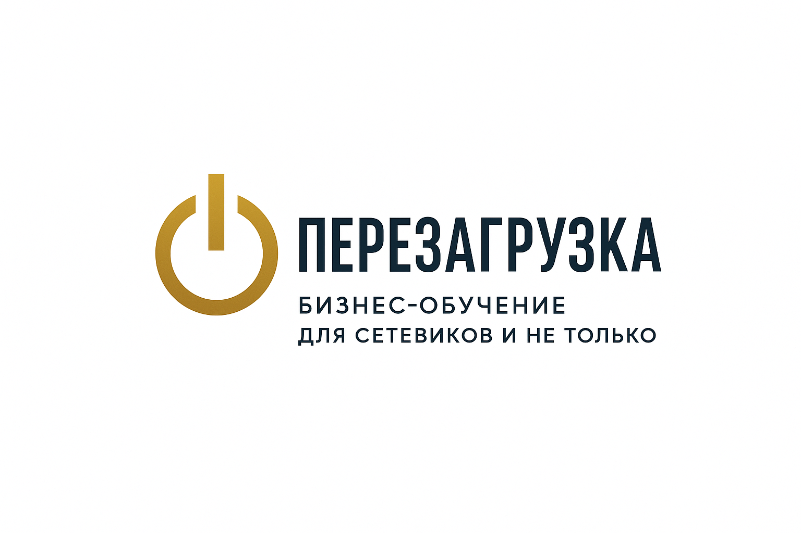

Диагностика и путь роста лидера
Определи свой этап развития в MLM и получи персональные шаги для перехода на следующий уровень.
Тема: Лидерский рост
Формат: Диагностика + План
Почему лидеры застревают
Лидеры часто не видят, где теряют энергию и влияние: кто-то застрял в операционке, кто-то перестал развивать людей. Диагностика — это зеркало, показывающее сильные стороны и зоны роста.
«Без честной диагностики нет осознанного роста»
5 этапов пути лидера
1
Новичок-вдохновитель. Делает сам, но не обучает других. Цель — систематизировать личные действия.
2
Рекрутёр. Начал выстраивать команду, но зависим от личных продаж. Цель — внедрить дубликацию.
3
Наставник. Передаёт систему и обучает других. Цель — создать сильное ядро.
4
Лидер-организатор. Управляет процессами, а не людьми. Цель — автоматизация и контроль.
5
Партнёр-вдохновитель. Строит культуру, а не структуру. Цель — масштаб и преемственность.
Что даёт диагностика
- Понимание своего уровня и узких мест
- Персональные рекомендации по росту
- Готовые инструменты для каждого этапа
- Доступ к интенсиву «Перезагрузка»
Пройди диагностику бесплатно
Ответь на 10 вопросов в Telegram-боте и получи карту своего лидерского пути с персональными шагами развития.